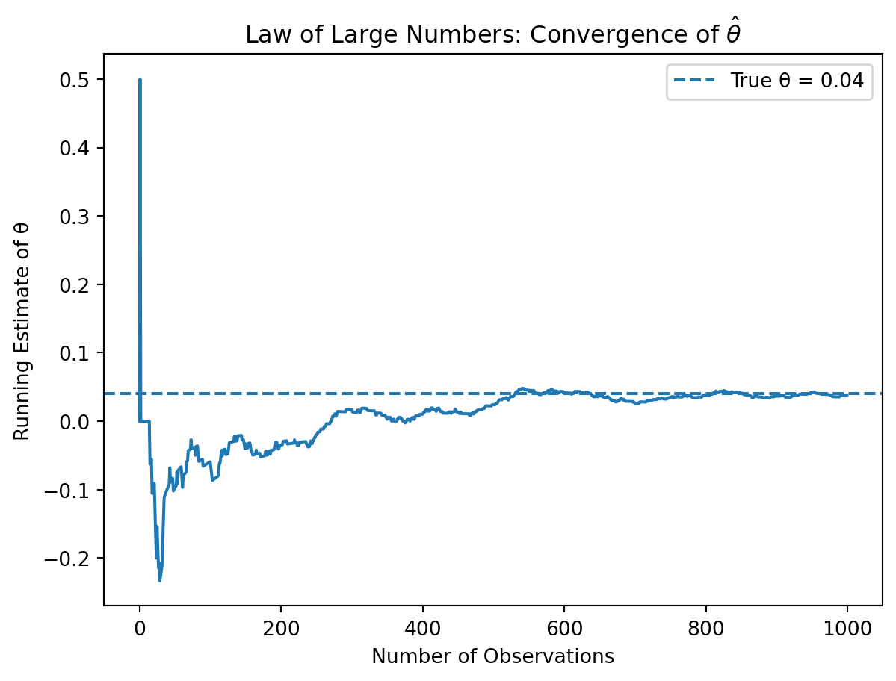
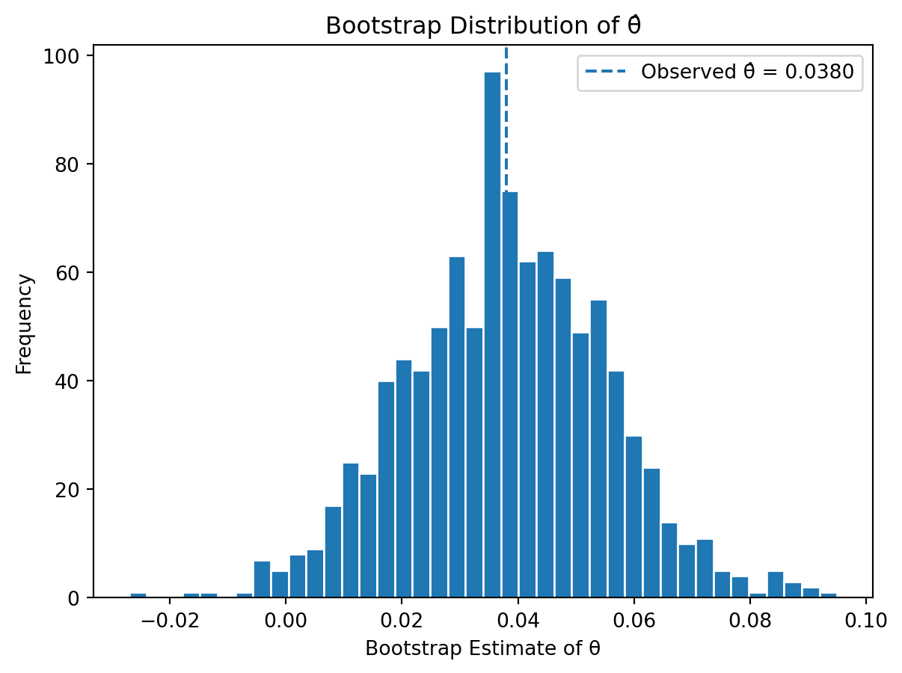
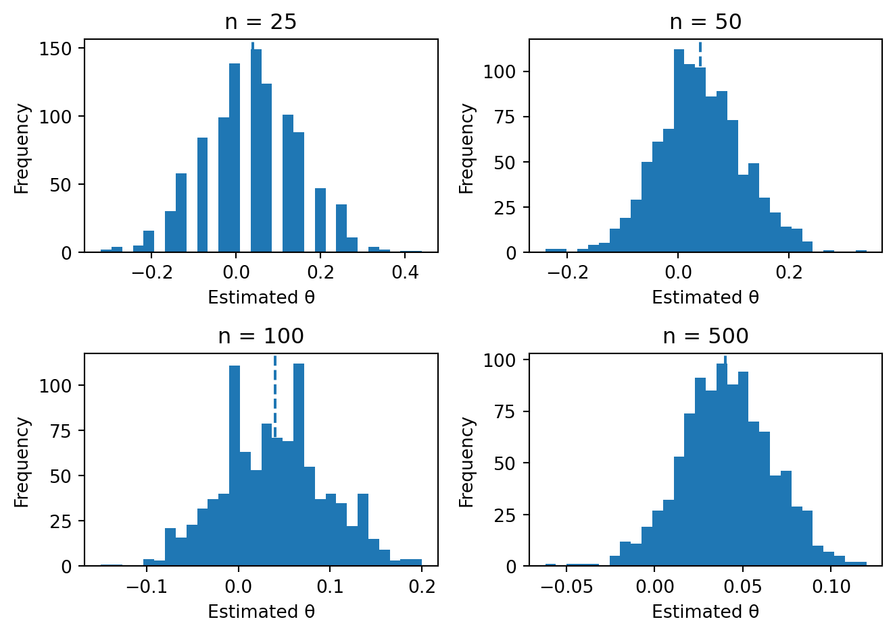

Simulating Key Ideas from Classical Frequentist Statistics
Author
Damilola Sule
Published
April 12, 2026
Introduction
To see how A/B testing works in practice, consider a simple scenario. You run a website, and your main goal on the landing page is to get visitors to sign up for your newsletter. Growing your audience depends on getting people to click that sign-up button, so even small changes in wording can matter.
Now suppose you’re not sure which message works better to attract people. One version could say, “Sign up for our newsletter here!”, while another says, “Stay up to date by signing up!”. Both could work, but you want to figure out which one is more effective.
Instead of guessing, you decide to run an A/B test. In an A/B test, visitors are randomly split into two groups: one group sees CTA A, and the other sees CTA B. You then compare how many people in each group actually sign up. By looking at the difference in sign-up rates, you can determine which CTA performs better and decide which one to use.
The A/B Test as a Statistical Problem
Now that we’ve described the A/B test intuitively, we can think about it more formally as a statistical problem.
Each visitor who comes to the website either signs up for the newsletter or doesn’t. Because of this, we can model each outcome as a Bernoulli random variable, where a value of 1 means the visitor signs up and 0 means they do not. The probability of a sign-up is denoted by \(\pi\).
However, the probability of signing up may depend on which CTA the visitor sees. Instead of using a single probability, we allow it to differ across the two groups. Visitors who see CTA A have a sign-up probability of \(\pi_A\), while visitors who see CTA B have a probability of \(\pi_B\).
The main quantity we care about is the difference between these two probabilities, \(\theta = \pi_A - \pi_B\). This represents how much better one CTA performs compared to the other.
Since we don’t know the true values of \(\pi_A\) and \(\pi_B\), we estimate them using the data we collect. For each group, we calculate the sample mean of the outcomes. Because each observation is either 0 or 1, the sample mean is just the proportion of visitors who signed up. So we have \(\bar{X}_A = \hat\pi_A\) and \(\bar{X}_B = \hat\pi_B\).
Our estimator for the difference in performance is \(\hat\theta = \bar{X}_A - \bar{X}_B\). In other words, we are comparing the observed sign-up rates between the two groups.
Setting Up the Problem
This setup gives us a clear way to measure performance, but it also raises an important question: how well does our estimator actually behave in practice? To answer that, we start by simulating data where we know the true answer.
Simulating Data
In a real A/B test, we would not know the true values of \(\pi_A\) and \(\pi_B\). Instead, we would only observe whether each visitor signs up and use that data to estimate these probabilities. For this exercise, however, we will set these values ourselves so that we know the true underlying difference. This allows us to evaluate how well our estimator performs when the true value is known.
Suppose that \(\pi_A = 0.22\) and \(\pi_B = 0.18\), so the true difference is \(\theta = 0.04\). This means that CTA A is, in reality, slightly more effective than CTA B.
To represent this scenario, we simulate data from two Bernoulli distributions. Each observation represents a visitor, where a value of 1 indicates a sign-up and 0 indicates no sign-up. We generate 1,000 observations for each group and store the results for use in later sections.
import numpy as npimport pandas as pdnp.random.seed(42)# True probabilitiespi_A =0.22pi_B =0.18# Number of observations per groupn =1000# Simulate dataX_A = np.random.binomial(1, pi_A, n)X_B = np.random.binomial(1, pi_B, n)# Store results in a dataframeab_data = pd.DataFrame({"group": ["A"] * n + ["B"] * n,"signup": np.concatenate([X_A, X_B])})# Compute sample estimatespi_A_hat = X_A.mean()pi_B_hat = X_B.mean()theta_hat = pi_A_hat - pi_B_hat# Display resultspd.DataFrame({"Quantity": ["pi_A_hat", "pi_B_hat", "theta_hat"],"Value": [pi_A_hat, pi_B_hat, theta_hat]})
Quantity
Value
0
pi_A_hat
0.216
1
pi_B_hat
0.178
2
theta_hat
0.038
The simulated data gives us one realization of an A/B test where the true difference is \(\theta = 0.04\). Because the data are generated randomly, the estimated values will not match the true probabilities exactly, but they should be reasonably close. This dataset will be used in the following sections to analyze the behavior of \(\hat\theta\) and better understand the properties of our estimator.
The Law of Large Numbers
The Law of Large Numbers tells us that as the sample size increases, the sample mean converges to the true population mean. In the context of our A/B test, this means that as we observe more visitors, our estimate \(\hat\theta = \bar{X}_A - \bar{X}_B\) should get closer to the true difference \(\theta\). This is what gives us confidence that with enough data, our estimate will be reliable.
To visualize this, we take the simulated data from the previous section and compute the difference between outcomes in group A and group B for each pair of observations. We then calculate the running average of these differences, which shows how our estimate evolves as we include more data.
<>:17: SyntaxWarning: invalid escape sequence '\h'
<>:17: SyntaxWarning: invalid escape sequence '\h'
/tmp/ipykernel_93341/2588416131.py:17: SyntaxWarning: invalid escape sequence '\h'
plt.title("Law of Large Numbers: Convergence of $\hat{\\theta}$")

What stands out immediately is how unstable the estimate is when only a small number of observations are used. Early on, \(\hat\theta\) fluctuates quite a bit, which highlights how unreliable small samples can be. As more data is included, however, the estimate begins to settle down and move toward the true value of \(\theta = 0.04\). This is exactly what the Law of Large Numbers predicts.
This illustrates the Law of Large Numbers in practice. Even though individual observations are random, averaging over a larger number of them leads to a more accurate and stable estimate. In the context of A/B testing, this means that larger sample sizes give us more confidence that the observed difference in performance reflects the true underlying effect.
Bootstrap Standard Errors
Now that we have an estimate of the difference in sign-up rates, the next question is how precise that estimate actually is. A point estimate like \(\hat\theta\) is useful, but on its own it does not tell us how much uncertainty surrounds it. This is why we also want a standard error and, eventually, a confidence interval.
Instead of relying only on formulas, we can estimate this uncertainty directly from the data using a method called the bootstrap. Each time we resample, we recompute the statistic of interest. The standard deviation of those resampled statistics then serves as an estimate of the standard error. This is especially useful because it does not require us to rely entirely on a closed-form formula.
In this case, I repeatedly resample from the simulated CTA A and CTA B data, compute a bootstrap version of the estimator \(\hat\theta^* = \bar{X}_A^* - \bar{X}_B^*\), and then use the spread of those bootstrap estimates to measure uncertainty.
import numpy as npimport pandas as pdnp.random.seed(42)B =1000bootstrap_thetas = []for _ inrange(B): X_A_star = np.random.choice(X_A, size=n, replace=True) X_B_star = np.random.choice(X_B, size=n, replace=True) theta_star = X_A_star.mean() - X_B_star.mean() bootstrap_thetas.append(theta_star)bootstrap_thetas = np.array(bootstrap_thetas)# Bootstrapped standard errorbootstrap_se = bootstrap_thetas.std(ddof=1)# Analytical standard erroranalytical_se = np.sqrt( (pi_A_hat * (1- pi_A_hat)) / n + (pi_B_hat * (1- pi_B_hat)) / n)# 95% confidence interval using the bootstrap standard errorci_lower = theta_hat -1.96* bootstrap_seci_upper = theta_hat +1.96* bootstrap_sepd.DataFrame({"Quantity": ["theta_hat","Bootstrap SE","Analytical SE","95% CI Lower","95% CI Upper" ],"Value": [ theta_hat, bootstrap_se, analytical_se, ci_lower, ci_upper ]})import matplotlib.pyplot as pltplt.figure()plt.hist(bootstrap_thetas, bins=40, edgecolor='white')plt.axvline(x=theta_hat, linestyle='--', label=f'Observed θ̂ = {theta_hat:.4f}')plt.xlabel("Bootstrap Estimate of θ")plt.ylabel("Frequency")plt.title("Bootstrap Distribution of θ̂")plt.legend()plt.show()

The bootstrap standard error and the analytical standard error should be very close to one another. That is a good sign, because it suggests that the resampling approach is producing a reasonable estimate of the variability in \(\hat\theta\). In other words, both methods are telling a very similar story about how much uncertainty is attached to our estimate.
Using the bootstrapped standard error, I construct a 95% confidence interval for \(\theta\). This interval gives a range of plausible values for the true difference in sign-up rates between the two CTAs. In practical terms, it tells us how large the true advantage of CTA A over CTA B might reasonably be, given the data we observed. If the interval does not include 0, that would suggest that the difference between the two CTAs is unlikely to be due to random chance alone.
The Central Limit Theorem
The Central Limit Theorem (CLT) tells us that, regardless of the underlying distribution of the data, the sampling distribution of the sample mean becomes approximately Normal as the sample size increases. In the context of our A/B test, this means that the distribution of \(\hat\theta = \bar{X}_A - \bar{X}_B\) will approach a Normal distribution as the number of observations grows.
To demonstrate this, we simulate the sampling distribution of \(\hat\theta\) for different sample sizes. For each value of \(n \in \{25, 50, 100, 500\}\), we repeatedly draw samples from the CTA A and CTA B distributions, compute \(\hat\theta\), and then visualize the distribution of these estimates.

The histograms show how the distribution of \(\hat\theta\) changes as the sample size increases. When \(n\) is small, the distribution appears more irregular and less smooth, reflecting higher variability in the estimates. As \(n\) grows, the distribution becomes more symmetric and increasingly bell-shaped.
By the time we reach larger sample sizes, such as \(n = 500\), the distribution of \(\hat\theta\) closely resembles a Normal distribution centered near the true value of \(\theta = 0.04\). This is a direct illustration of the Central Limit Theorem in action. Even though the underlying data are Bernoulli (which are not Normally distributed), the distribution of the estimator becomes approximately Normal as the sample size increases.
This result is what makes the rest of the analysis possible without approximate Normality, we would not be able to construct confidence intervals or perform hypothesis tests in a straightforward way.
Hypothesis Testing
Now that we have seen the Central Limit Theorem in action, we can use it to perform a formal hypothesis test. The idea of a hypothesis test is to use data to evaluate a claim about an unknown parameter. In this case, we want to determine whether the difference in sign-up rates between the two CTAs is real or could have occurred just by chance.
We begin by setting up our hypotheses. The null hypothesis is \(H_0: \theta = 0\), which means that the two CTAs perform equally well. The alternative hypothesis is \(H_1: \theta \neq 0\), which means that there is a difference in performance between the two.
To test this, we standardize our estimator by computing the test statistic \(z = \frac{\hat\theta - 0}{SE(\hat\theta)}\). This step is important because it allows us to compare our observed result to a known reference distribution.
The reasoning behind this standardization comes from the Central Limit Theorem. First, we know that for large samples, \(\hat\theta\) is approximately Normally distributed. Under the null hypothesis, the mean of this distribution is 0. When we divide a Normally distributed variable by its standard deviation, we obtain a standard Normal distribution, \(N(0,1)\). This means that under \(H_0\), the test statistic \(z\) follows an approximate standard Normal distribution. Once we know this, we can compute a p-value, which tells us how extreme our observed result is under the assumption that the null hypothesis is true.
This procedure is often referred to as a “t-test,” but that name is slightly misleading in this context. The classical t-test assumes Normally distributed data and derives an exact t-distribution when the variance is estimated. Here, our data are Bernoulli, not Normal, so we do not get an exact t-distribution. Instead, we rely on the Central Limit Theorem to justify approximate Normality. Since we are also estimating the standard error from the data, what we are doing is closer to a z-test. In practice, for large samples, the t-distribution and the standard Normal distribution are very similar, so this distinction has little practical impact, but it is still important to understand the reasoning behind it.
from scipy.stats import normimport pandas as pd# Compute test statisticz_stat = theta_hat / analytical_se# Two-sided p-valuep_value =2* (1- norm.cdf(abs(z_stat)))pd.DataFrame({"Quantity": ["z-statistic", "p-value"],"Value": [z_stat, p_value]})
Quantity
Value
0
z-statistic
2.138818
1
p-value
0.032450
The test statistic measures how far our estimate \(\hat\theta\) is from 0 in units of its standard error. In other words, it tells us how “surprising” our result would be if there were actually no difference between the two CTAs.
In this case, the p-value is very small, which provides strong evidence against \(H_0\). This suggests that the difference in sign-up rates between the two CTAs is unlikely to be due to random chance alone. Instead, it appears that CTA A genuinely performs better than CTA B.
The T-Test as a Regression
It turns out that the two-sample test we just performed can also be written as a simple linear regression. This is useful because it shows that hypothesis testing and regression are closely related, and it allows us to use standard regression tools to analyze A/B tests. This framework also extends naturally if we want to add more variables or run more complex experiments.
To set this up, we combine the CTA A and CTA B data into a single dataset. For each observation, we define an outcome variable \(Y_i\), which equals 1 if the visitor signs up and 0 otherwise, and an indicator variable \(D_i\), which equals 1 if the visitor saw CTA A and 0 if they saw CTA B. We then estimate the regression model \(Y_i = \beta_0 + \beta_1 D_i + \varepsilon_i\).
The coefficients in this regression have a clear interpretation. When \(D_i = 0\), the equation reduces to \(Y_i = \beta_0\), so \(\beta_0\) represents the mean outcome for group B, which estimates \(\pi_B\). When \(D_i = 1\), the equation becomes \(Y_i = \beta_0 + \beta_1\), so \(\beta_0 + \beta_1\) represents the mean outcome for group A, which estimates \(\pi_A\). This means that \(\beta_1 = \pi_A - \pi_B = \theta\), so the estimated coefficient \(\hat\beta_1\) is exactly the same as \(\hat\theta = \bar{X}_A - \bar{X}_B\).
We can now fit this regression using the simulated data.
import statsmodels.api as smimport pandas as pd# Create indicator variable: 1 for A, 0 for Bab_data["D"] = (ab_data["group"] =="A").astype(int)# Define variablesY = ab_data["signup"]D = ab_data["D"]# Add constant for interceptX = sm.add_constant(D)# Fit regressionmodel = sm.OLS(Y, X).fit()# Extract relevant resultsresults = pd.DataFrame({"Quantity": ["beta_1 (coef)", "Standard Error", "t-statistic", "p-value"],"Value": [ model.params["D"], model.bse["D"], model.tvalues["D"], model.pvalues["D"] ]})results
Quantity
Value
0
beta_1 (coef)
0.038000
1
Standard Error
0.017776
2
t-statistic
2.137748
3
p-value
0.032658
The estimated coefficient \(\hat\beta_1\) matches the difference in sample means \(\hat\theta\) from the previous section. The standard error, t-statistic, and p-value are also very similar to what we computed earlier, with only small differences due to how the standard error is calculated in the regression framework.
This equivalence matters because it shows that A/B testing is just a special case of a regression model. In more complex settings, we could easily extend this framework by adding additional variables, interactions, or multiple treatment groups, while still using the same underlying logic for estimation and inference.
The Problem with Peeking
In practice, A/B tests are often monitored as data comes in. Suppose that instead of waiting until all 1,000 visitors per group have been observed, we check the results every 100 visitors. At each step, we run a hypothesis test and stop early if we find a statistically significant result. While this might seem reasonable, it creates a serious problem from a statistical perspective.
Under classical frequentist statistics, a single hypothesis test conducted at the \(\alpha = 0.05\) level has a 5% chance of producing a false positive when the null hypothesis is true. However, if we repeatedly test the data as it accumulates, each additional test creates another opportunity to incorrectly reject \(H_0\). As a result, the overall probability of making at least one false rejection becomes much larger than 5%.
To demonstrate this, I simulate a setting where the null hypothesis is actually true, meaning \(\pi_A = \pi_B = 0.20\) and therefore \(\theta = 0\). I then repeatedly simulate experiments and check whether peeking at the data leads to false discoveries.
0.1864
The result of this simulation shows that the false positive rate is much higher than the nominal 5% level. Even though there is actually no difference between the two CTAs, repeatedly checking the results makes it increasingly likely that we will eventually observe a “significant” result purely by chance.
This illustrates why peeking is problematic. By conducting multiple tests on the same accumulating data, we inflate the probability of incorrectly rejecting the null hypothesis. In practice, this means that if we stop an experiment early whenever we see a significant result, we are much more likely to declare a winner when no real effect exists.
This is a subtle but important point. In practice, repeatedly checking results can make an experiment appear to produce meaningful findings even when there is no real effect. Without proper adjustments, this leads to overconfidence in results and poor decision-making. This is why well-designed A/B tests either fix the sample size in advance or use methods specifically designed for sequential analysis.
Conclusion
What starts as a simple comparison between two buttons turns out to rely on a full set of statistical tools. From the Law of Large Numbers to the Central Limit Theorem and hypothesis testing, each step plays a role in helping us make reliable decisions from data.
A/B testing may seem straightforward on the surface, but without careful statistical reasoning, it is easy to draw incorrect conclusions. By understanding both the methods and their limitations, we can design experiments that lead to more trustworthy and meaningful results.